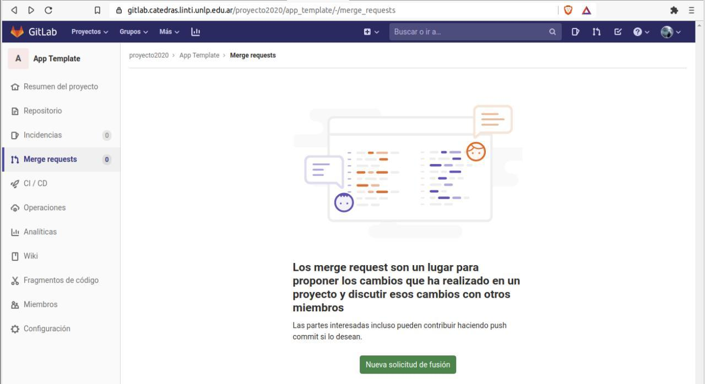
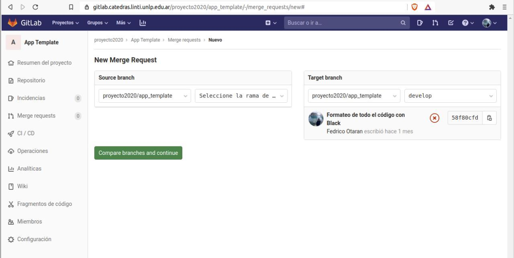
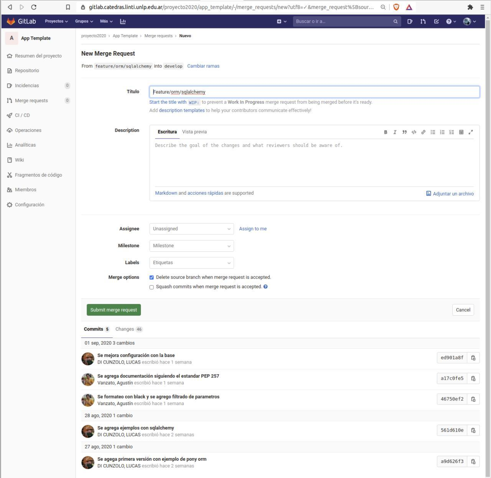
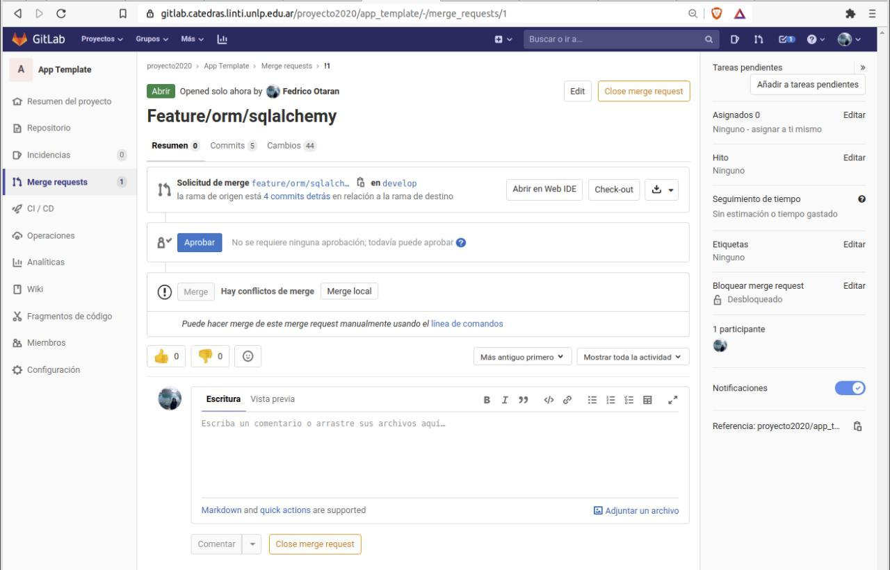
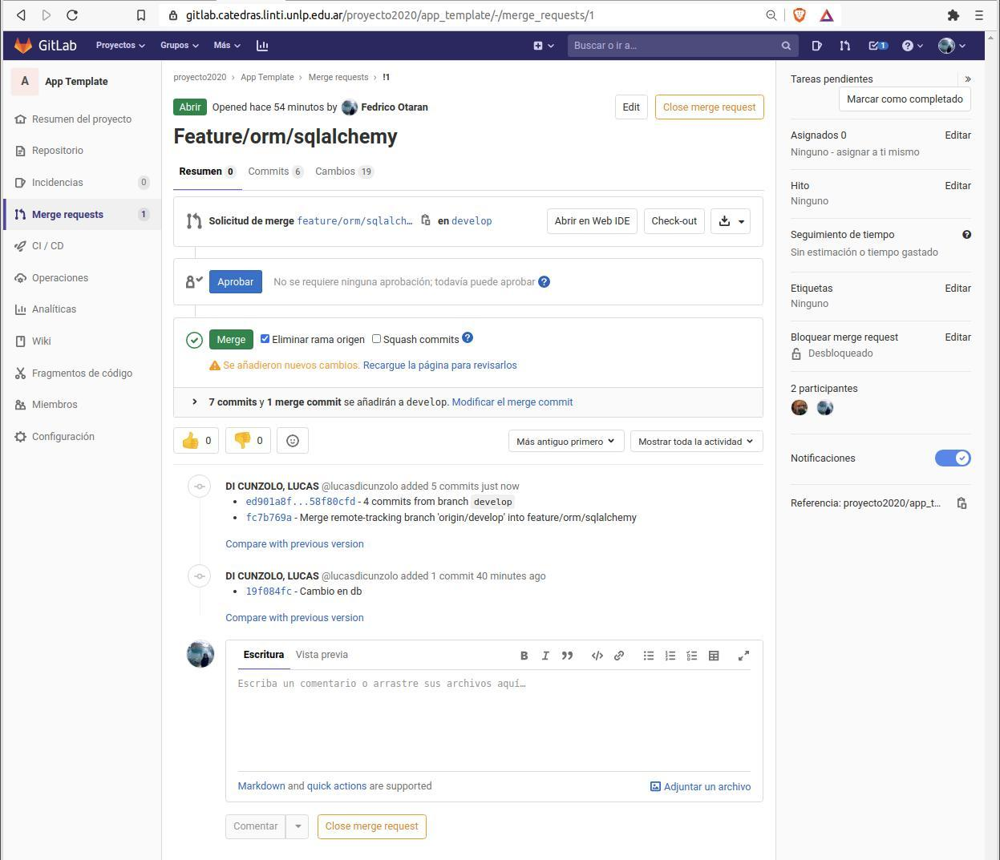

Merge Request Gitlab¶
En esta guía vamos a mostrar como realizar un Merge Request dentro de Gitlab. El uso de Merge Request puede aportar mucho en el proceso de desarrollo por varios motivos entre los que se destacan:
- Ayuda a que todo el equipo se mantenga al tanto de los cambios.
- Sirve para realizar la técnica de Code Review.
- Permite abrir una discusión o debate sobre la implementación de una nueva funcionalidad.
Aquí la documentación oficial de Gitlab con mucho material sobre los Merge Request.
En esta guía veremos lo básico de la creación de un MR y el proceso de aprobación.
Crear un nuevo MR¶
Para crear un nuevo MR vamos al apartado Merge Request del menú de nuestro proyecto.

Dentro de ese apartado clickear la opción "Nueva solicitud de fusión".

En la siguiente ventana vamos a poder seleccionar cual es la rama origen y cual la rama destino que queremos fusionar.

Luego de elegir las ramas que queremos fusionar podemos ver algo así:

Es necesario confirmar para pasar a la siguiente sección donde vamos a tener un formulario para completar con información útil para el Merge Request. Podemos ponerle una descripción, asignarlo a un compañero para que lo revise, asociarlo a un milestone particular, agregarle etiquetas y configurar unas opciones propias del MR como borrar la rama origen cuando se realice y usar la estrategia squash para el merge de nuestros commits.
Además, se ve el resumen de los commits que se van a agregar a la rama destino y una pestaña con los cambios que se van a realizar en los archivos.
Para confirmar la creación del MR se debe hacer submit con el botón "Submit merge request".

Confirmar MR¶
Una vez confirmado pasamos a la vista del Merge Request creado donde se pueden visualizar los cambios, comentar, aprobar los cambios y finalmente realizar el merge.
Algunas veces la rama que queremos funcionar puede tener conflictos. Estos conflictos Gitlab no los puede resolver, entonces no queda mas que avisar del problema, pedir que se resuelvan para poder realizar el merge.

Para resolver estos conflictos tenemos que traernos a la rama origen los cambios de la rama destino, es decir, hacemos un merge en sentido contrario. Luego queda resolver los conflictos que ocurran para luego hacer un push en nuestra rama origen.
Si todo sale bien, al volver a la ventana anterior ahora vamos a ver esto:

Ahora podemos realizar el merge sin ningún problema.